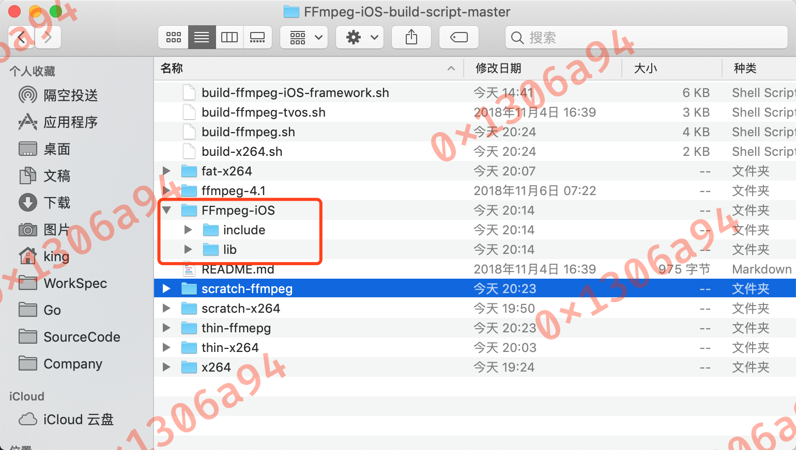
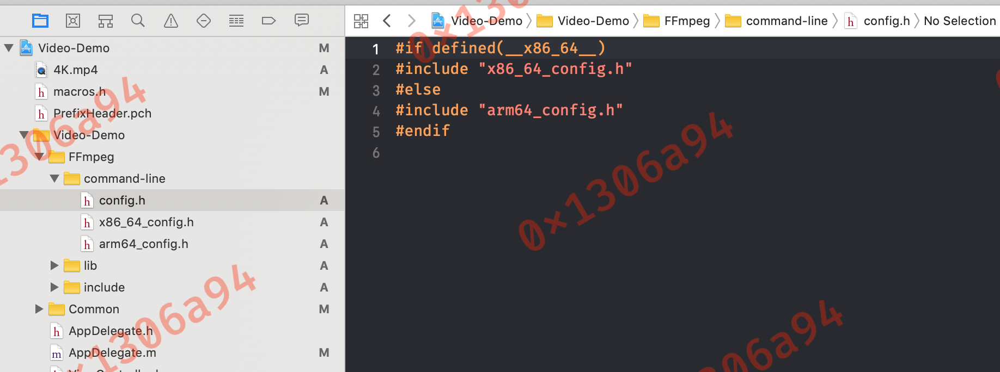
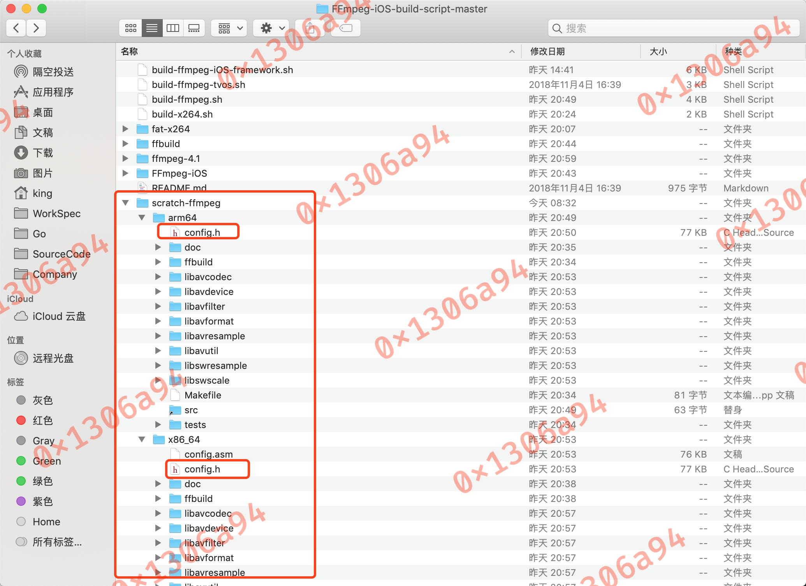
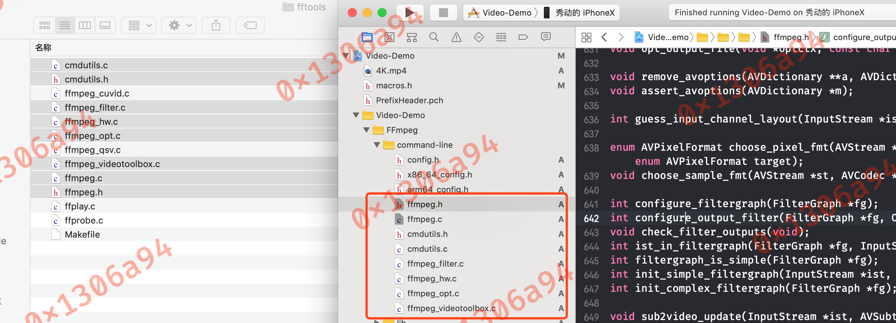
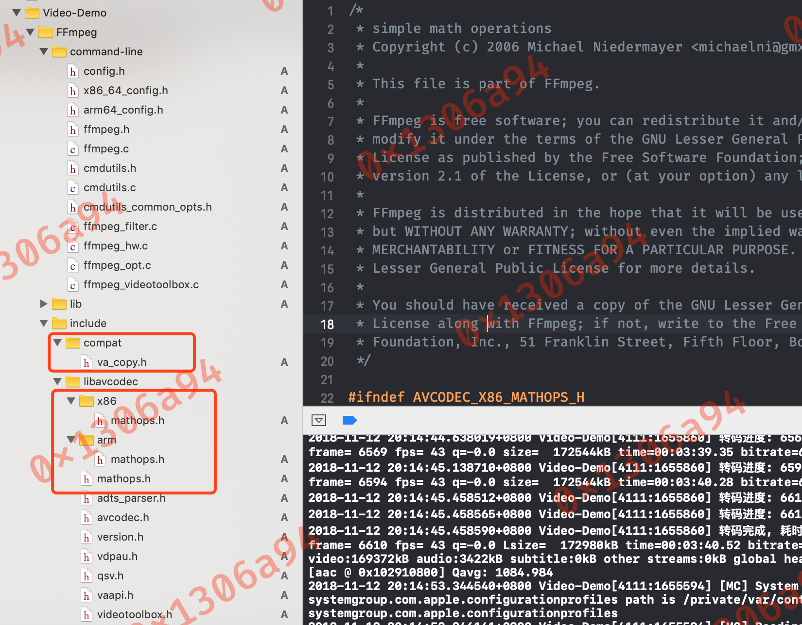
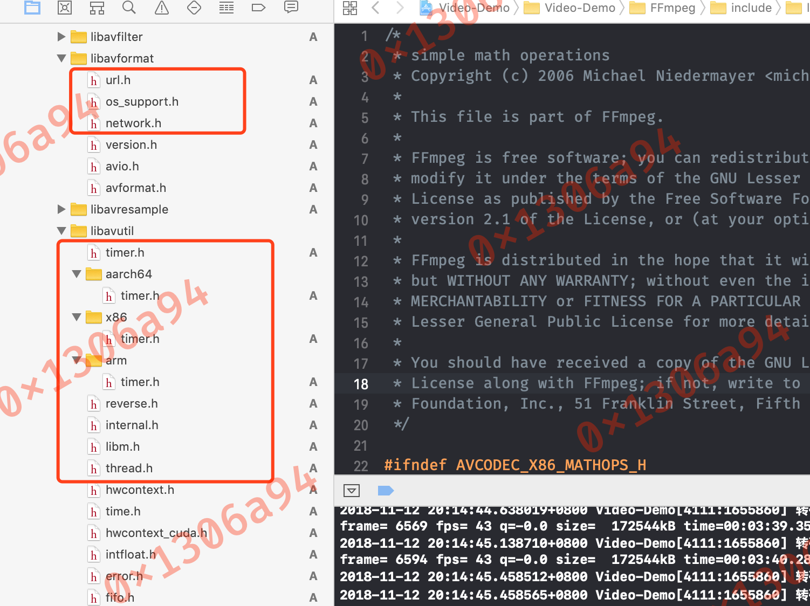
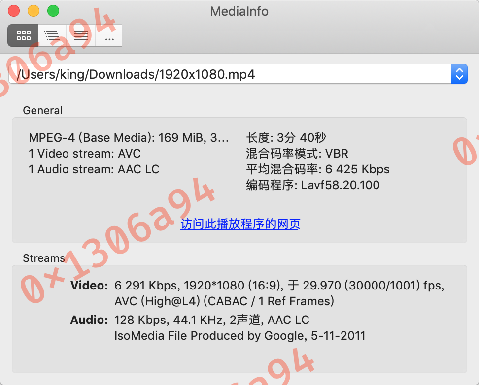
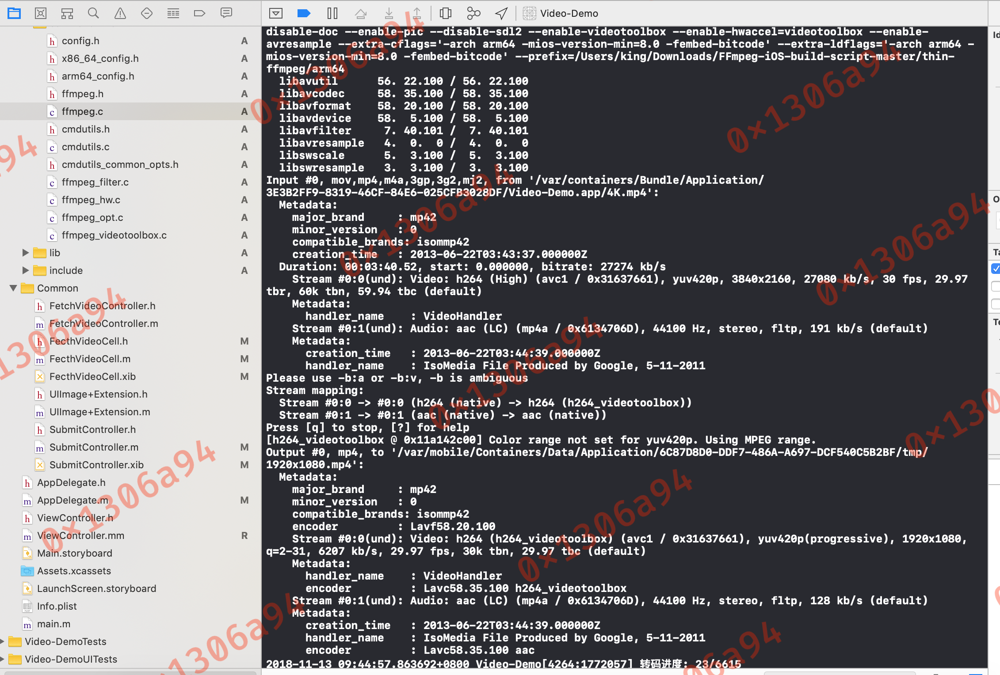
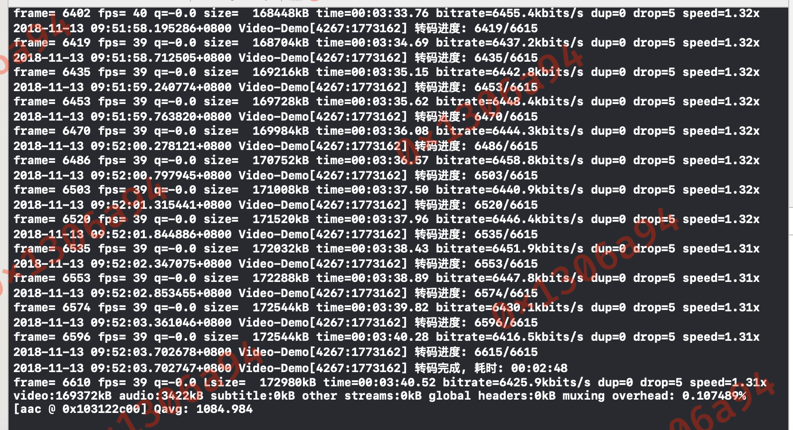

iOS使用FFmepeg命令行工具源码实现转码功能
1 编译FFmpeg
- 下载FFmpeg-iOS-build-script
- 修改脚本如下位置
# 可改可不改
SCRATCH="scratch-ffmpeg"
# 可改可不改
# must be an absolute path
THIN=`pwd`/"thin-ffmpeg"
# absolute path to x264 library
#X264=`pwd`/fat-x264
#FDK_AAC=`pwd`/../fdk-aac-build-script-for-iOS/fdk-aac-ios
# 修改 CONFIGURE_FLAGS 为如下
CONFIGURE_FLAGS="--enable-cross-compile \
--disable-debug \
--disable-programs \
--disable-ffmpeg \
--disable-ffplay \
--disable-ffprobe \
--disable-doc \
--enable-pic \
--disable-sdl2 \
--enable-videotoolbox \
--enable-avresample"
# 只编译如下架构
ARCHS="arm64 x86_64"
- 执行
./build-ffmpeg.sh,等待编译完成,编译完成后再执行./build-ffmpeg.sh lipo合并所有架构的库
2 集成工程
-
将编译后的 静态库以及头文件导出工程, 并设置
HEADER SEARCH PATH  -
在项目中新建一个
command-line文件夹 -
新建
config.hx86_64_config.harm64_config.h -
在
config.h中写入一下内容
#if defined(__x86_64__)
#include "x86_64_config.h"
#else
#include "arm64_config.h"
#endif
-
在编译
ffmepg生成的scratch目录将对于架构目录下的config.h文件内容拷贝上面对应的文件中  -
在
ffmepg源码目录fftools目录中将以下文件导入工程中  -
在源码目录中搜索
cmdutils_common_opts.h文件,同样导入工程 -
在
ffmpeg.h文件最后,添加以下代码
typedef void(*FFmpegCallBack)(int64_t, int64_t);
int ffmpeg_main(int argc, char **argv, FFmpegCallBack callback);
- 修改
ffmepg.c文件中int main(int argc, char **argv)为int ffmpeg_main(int argc, char **argv, FFmpegCallBack callback) - 修改
ffmpeg.c文件中static void ffmpeg_cleanup(int ret)函数
// 在 static void ffmpeg_cleanup(int ret) 函数末尾 添加以下代码
#warning 置空相关计数器
nb_filtergraphs = 0;
nb_output_files = 0;
nb_output_streams = 0;
nb_input_files = 0;
nb_input_streams = 0;
- 修改
cmdutils.c文件,首先在头部导入#include <pthread/pthread.h>然后修改void exit_program(int ret)函数
void exit_program(int ret)
{
if (program_exit)
program_exit(ret);
#warning 由于iOS应用是单进程,如果使用 exit 退出进程,则应用会被退出,因此改为退出线程
// exit(ret);
pthread_exit(NULL);
}
- 处理进度回调
// 修改 ffmpeg.c
static int transcode(void)
// 修改如下
static int transcode(FFmpegCallBack callback)
// 修改 ffmpeg.c
static void print_report(int is_last_report, int64_t timer_start, int64_t cur_time)
// 修改如下
static void print_report(int is_last_report, int64_t timer_start, int64_t cur_time, FFmpegCallBack callback)
// 在如下函数
static void print_report(int is_last_report, int64_t timer_start, int64_t cur_time, FFmpegCallBack callback)
// 1685 行位置 添加如下代码
int64_t total_frames_number = input_files[0]->ctx->streams[0]->nb_frames;
// 将 1716 ~ 1717 行代码改为如下代码
if (is_last_report) {
if (callback != NULL) {
(*callback)(total_frames_number, total_frames_number);
}
av_bprintf(&buf, "L");
} else {
if (callback != NULL) {
(*callback)((int64_t)frame_number, total_frames_number);
}
}
- 此时肯定是编译不通过的,因为还缺少文件, 在源码目录搜索以下文件,导入工程对应的位置
请注意导入对应源码目录中的文件
libavcodec/mathops.h
libavcodec/arm/mathops.h
libavcodec/x86/mathops.h
libavutil/thread.h
libavutil/libm.h
libavutil/internal.h
libavutil/timer.h
libavutil/aarch64/timer.h
libavutil/arm/timer.h
libavutil/x86/timer.h
libavutil/x86/asm.h
libavutil/x86/emms.h
libavutil/reverse.h
libavformat/network.h
libavformat/os_support.h
libavformat/url.h
compat/va_copy.h
 
3 如何使用
- 将
Objective-C类型参数转为C类型参数,然后传入ffmpeg_mainVideo-Demo
static NSDate *date = nil;
static void __FFmpegCallBack(int64_t current, int64_t total) {
NSLog(@"转码进度: %lld/%lld", current, total);
if ((current / total) >= 1) {
int64_t time = (int64_t)([NSDate date].timeIntervalSince1970 - date.timeIntervalSince1970);
int64_t hours = time % (24*3600) / 3600;
int64_t minutes = time % 3600 / 60;
int64_t second = time % 60;
NSLog(@"转码完成, 耗时: %02lld:%02lld:%02lld", hours, minutes, second);
}
}
- (void)startFFmpeg:(NSArray<NSString *> *)commands {
@autoreleasepool {
int argc = (int)commands.count + 1;
char **argv[argc];
argv[0] = "ffmpeg";
int idx = 1;
for (NSString *cmd in commands) {
argv[idx] = cmd.UTF8String;
idx++;
}
NSString *finalCommand = [NSString stringWithFormat:@"ffmpeg 运行参数: \nffmpeg %@", [commands componentsJoinedByString:@" "]];
NSLog(@"%@\n%@", finalCommand, [NSThread currentThread].name);
date = [NSDate date];
ffmpeg_main(argc, argv, &__FFmpegCallBack);
}
}
// 使用 NSThread 线程调用
NSString *input_path = @"xxxx"; // 输入视频路径
NSString *ouput_path = @"xxxx"; // 输出视频路径
NSString *video_size = @"1920x1080"; // 输出视频尺寸
NSString *video_bit_rate = @"6000k"; // 输出视频码率
NSString *video_code = @"h264_videotoolbox"; // 视频编码器
NSString *video_frame_rate = @"30"; // 视频帧率
NSString *audio_bit_rate = @"64k"; // 音频码率
NSString *audio_sample_rate = @"44.1k"; // 音频采样率
NSString *audio_channels = @"1"; // 音频声道数
NSString *audio_code = @"aac"; // 音频编码器
NSArray<NSString *> *commands = @[@"-y",
@"-i",
input_path,
@"-s",
video_size,
@"-b:v",
video_bit_rate,
@"-vcodec",
video_code,
@"-r",
video_frame_rate,
@"-b:a",
audio_bit_rate,
@"-ar",
audio_sample_rate,
@"-ac",
audio_channels,
@"-acodec",
audio_code,
ouput_path];
NSThread *thread = [[NSThread alloc] initWithTarget:self selector:@selector(startFFmpeg:) object:commands];
thread.name = @"ffmpeg.transcode.thread";
[thread start];
- 测试视频信息,测试转码设备
iPhone X 64G - 转码后视频信息   